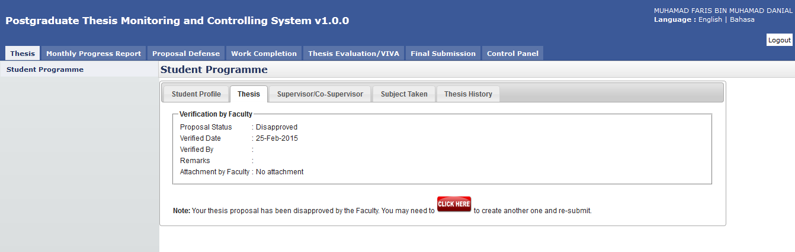

Disapprove
If there is a case where the thesis proposal does not meet the expectation of the Faculty or the content does not fit the title, the proposal may be rejected or disapproved by the Faculty.
For this scenario, the system will notify the student on the proposal status.

Figure 65: Proposal Disapproved by Faculty
Steps:-
- After the proposal has been submitted to the Faculty, the Faculty will review it and determine its status. In case the proposal gets rejected due to some reason, the student can check it via Thesis tab.
- Click Thesis tab on Top panel
- Click on the Student Programme on the Left panel
- Click on the Thesis Tab on the Working Area section.
- The system will show the proposal status and the student can read the Remarks and download the Attachment from Faculty (if any).
- For this case, the student can amend the proposal according to the advice given by the Faculty.
- Click on the
 Click Here button to proceed and resubmit
Click Here button to proceed and resubmit
Created with the Personal Edition of HelpNDoc: Free HTML Help documentation generator